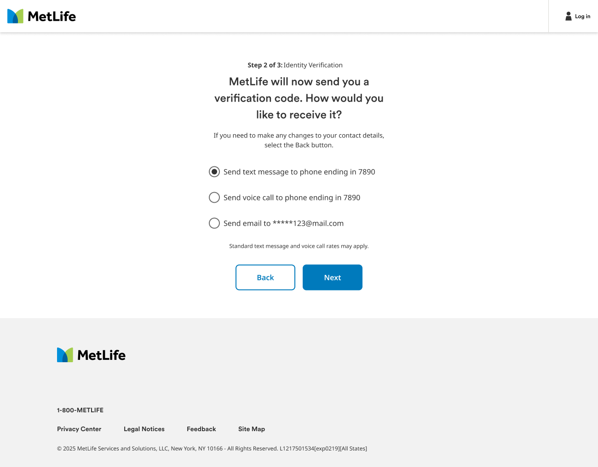

01
Truth
Beneficiaries arrive with a claim kit in hand, not a MetLife account.
Action
Start from the kit. A dedicated landing page explains the process in three steps, and the claim-kit access code connects their new account to the right policy. Identity verification is a short, familiar code-by-text or email step.
